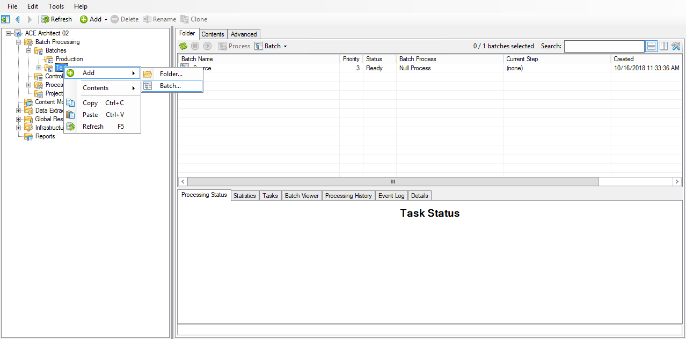
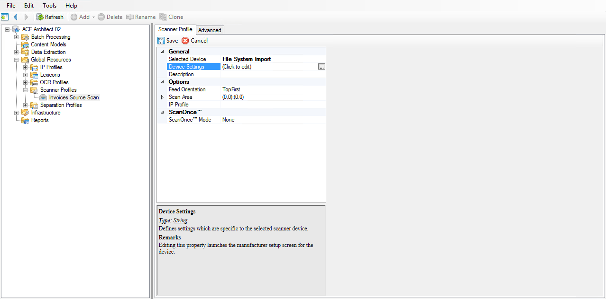
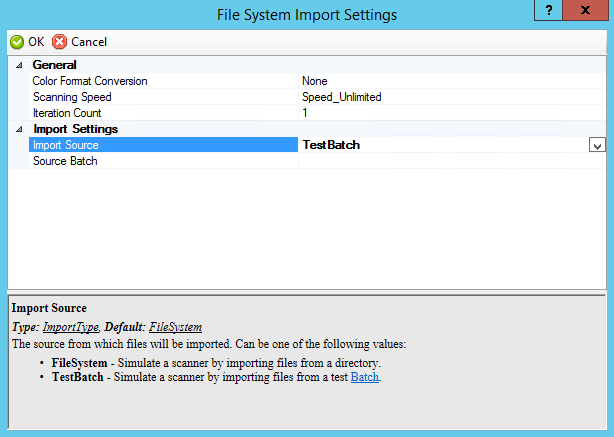
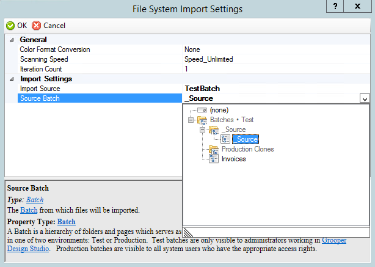
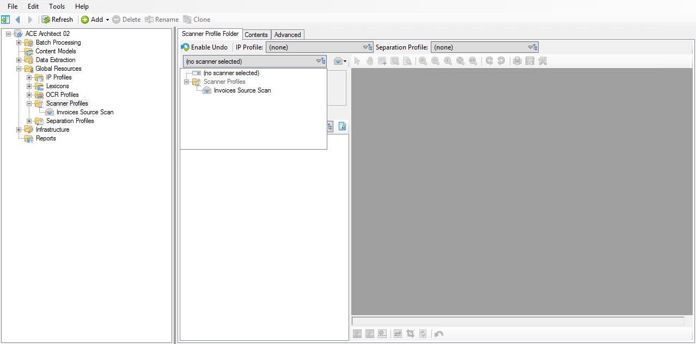

Acquire¶
Importing¶
Importing a pre-made batch¶
(root)
- Right click and select Import > Compressed Archive.
- Set the Import Path property to the Grooper ACE - Architect - Volume II - Begin.zip file.
- Press Execute.


Creating an empty test batch¶
Batch Processing / Batches / Test
- Right click and select Add > Batch....
- Name it Invoices.


Scanning¶
Creating a Scanner Profile¶
Global Resources / Scanner Profiles
- Right click and select Add > Scanner Profile....
- Name it Invoices Source Scan.


Configuring the Scanner Profile¶
Global Resources / Scanner Profiles / Invoices Source Scan
-
Change the following properties:
Section/Property Default Value New Value General Selected Device -File System Import→ Device Settings (Click to edit) (Click to edit) -
In the File System Import Settings window, change the following property values:
Section/Property Default Value New Value Import Settings Import Source FileSystemTestBatchSource Batch -_Source



Testing the Scanner Profile¶
Global Resources > Scanner Profiles
- From the Scanner Profile dropdown select the Invoices Source Scan profile.
- From the batch dropdown select the Invoices batch.
- Press Scan.



Playground¶
-
Edit the patterns for each of the Data Formats:
-
Acme/Standard/Express
[0-9]{6,16} -
Enid
([A-Z]{3})/([@Number]{8}){1}{2:Number} -
Spartan
([A-Z]{2})([@Number]{2})-([@Number]{6}){1}{2:Number}-{3}
-
| Acme/Standard/Express | |
|---|---|
| Value Pattern | [0-9]{6,16} |
| Look Ahead Pattern | |
| Look Behind Pattern | |
| Output Format |
| Enid | |
|---|---|
| Value Pattern | ([A-Z]{3})/([@Number]{8}) |
| Look Ahead Pattern | |
| Look Behind Pattern | |
| Output Format | {1}{2:Number} |
| Spartan | |
|---|---|
| Value Pattern | ([A-Z]{2})([@Number]{2})-([@Number]{6}) |
| Look Ahead Pattern | |
| Look Behind Pattern | |
| Output Format | {1}{2:Number}-{3} |
| Data Format | Acme/Standard/Express | Enid | Spartan |
|---|---|---|---|
| Value Pattern | [0-9]{6,16} |
([A-Z]{3})/([@Number]{8}) |
([A-Z]{2})([@Number]{2})-([@Number]{6}) |
| Look Ahead Pattern | |||
| Look Behind Pattern | |||
| Output Format | {1}{2:Number} |
{1}{2:Number}-{3} |
Edit the patterns for each of the Data Formats:
-
Acme
Make sure to enable Tab Marking
([@Number.]{3,12})WS.FREIGHT[0o]231[^\n]+\n [^\n]+\n [^\t]+\t [^\t]+\t
\r\n
{1:Number} -
Enid
([@Number.]{3,12})020-0027[^\n]*?\n[^\r]*?
\r\n
{1:Number} -
Express
([@Number.]{3,12})shipping charge:?[^0-9]{0,4}{1:Number} -
Standard
([@Number.]{3,12})shipping charge\s
{1:Number}
- Create two child Data Formats of the Spartan Data Type:
- Freight
- Value 1
-
Edit the Value Patterns for each of the Data Formats:
freight
[\d.]+
| Zone 1 | Zone 2 | |
|---|---|---|
| Left | -4 |
-1 |
| Top | -0.02 |
-0.25 |
| Right | 0.35 |
0.375 |
| Bottom | 0.1 |
0.05 |
- Click to edit the Context Zones property
- In the Context Zones window, delete one of the zones
-
Edit the dimensions of the remaining zone:
Zone Left -2.4Top -0.2Right 0.25Bottom 0.1 -
Click OK to close the Context Zones window
-
In the Output section, set the Minimum Confidence property to 90%
-
In the properties panel, set the ESP™ Extraction Overrides > Override Extractor property to True
- Expand Extractor and set the Extractor > Type property to Reference
- Set the Referenced Extractor property to the Invoices • (local resources) > Overrides > [Enid] Sales Tax Field Class
| Section | Default Value | New Value |
|---|---|---|
| General | ||
| IP Profile | - | OCR Cleanup |
| Bound Region Processing | Disabled |
Enabled |
| Synthesis Options | ||
| Synthesis Options | Segment End Ratio | 125% |
| Synthesis Options | Segment Reprocessing Threshold | 90% |
| Iterative Processing | OCR Iterations | 2 |
| Iterative Processing | Enable Cell Validation | True |
| Iterative Processing | Rows | 1 |
| Iterative Processing | Columns | 4 |
| Iterative Processing | Skip First Column | True |
| Results Filtering | Minimum Character Confidence | 20% |
| Results Filtering | Eliminate Isolated Symbols | True |
| Document Structure | Orientation | None |
| Document Structure | Perform Sectioning | True |
| Processing Options | Reject Questionable Lines | True |
| Processing Options | Reject Questionable Characters | ([@Number.]{3,12}) |
| Section | Default Value | New Value |
|---|---|---|
| General | ||
| IP Profile | - | OCR Cleanup |
| Bound Region Processing | Disabled |
Enabled |
| Synthesis Options | ||
| Segment End Ratio | 125% |
|
| Segment Reprocessing Threshold | 90% |
|
| Iterative Processing | ||
| OCR Iterations | 2 |
|
| Enable Cell Validation | True |
|
| Rows | 1 |
|
| Columns | 4 |
|
| Skip First Column | True |
|
| Results Filtering | ||
| Minimum Character Confidence | 20% |
|
| Eliminate Isolated Symbols | True |
|
| Document Structure | ||
| Orientation | None |
|
| Perform Sectioning | True |
|
| Processing Options | ||
| Reject Questionable Lines | True |
|
| Reject Questionable Characters | True |
Disabled 2 True -0.02 ([@Number.]{3,12}) {1} 020-0027[^\n]*?\n[^\r]*? WS.FREIGHT[0o]231[^\n]+\n [^\n]+\n [^\t]+\t [^\t]+\t
OCR Cleanup
| Property Location | Default Value | New Value |
|---|---|---|
| General | ||
| → Item Type | Content Category |
Document Type |
| → Item Names | - |
AcmeEnidExpressSpartanStandard |